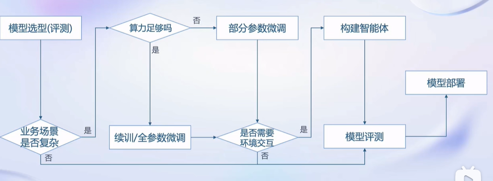
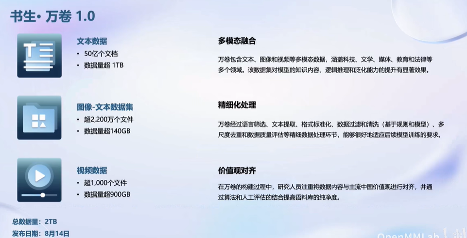
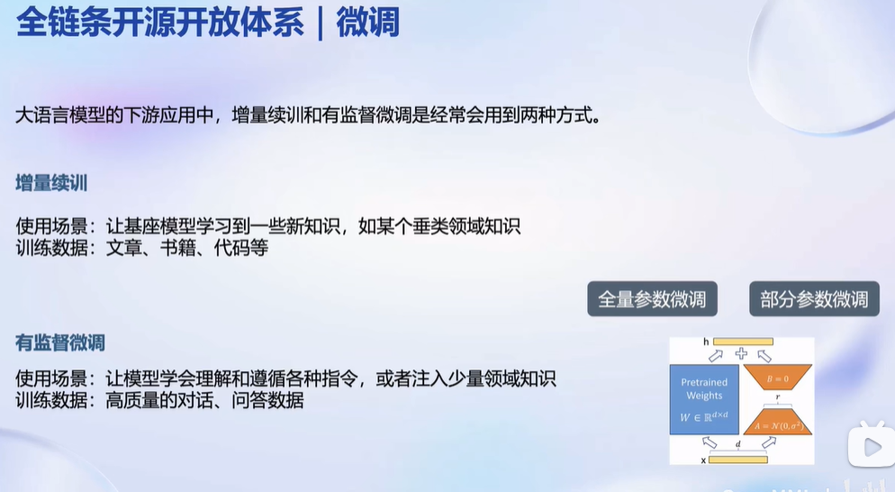

大模型实战营第一次课笔记
这是大模型实战营第一次课的笔记
模型部署路线图

预训练数据

我没有亲手做过大模型预训练，对于如何处理如此庞大的数据还是一头雾水。目前存在的问题有：
如何高效处理超大规模数据？
二维和三维数据如何做tokenization?
如何设计训练过程？
……
期待随着学习的深入，我对这个问题能有更清晰的认识。
预训练
这部分主要突出了MMPretrain对于预训练的加速，期待有一天能有算力条件使用这个框架训练大模型。
微调

之前做的项目属于LoRA+SFT，增量续训实际上要求算力比SFT高，之前没条件做。我是通过几本书构建的SFT数据集，现在看来应该先增量续训再微调，效果会更好。
或许后续可以用XTuner+QLoRA再把之前的项目做一次，有了它的显存优化加持，应该能调更大的模型了。
评测
我认为评测应当以主观为主，客观为辅。毕竟我们大多时候想知道的是为什么，而不是仅仅输出答案。防止评测成为刷榜工具。
部署
LLM在模型结构上主要存在以下特点：
参数量大
输入输出长度不定
模型结构简单（多为Transformer decoder-only）
在工程上可能还存在低计算资源部署，增强外推能力，降低平均响应时间等实际问题，我目前比较关注移动端部署，正在做的项目与此有关。
为了解决上面的问题，我知道的方法有：
模型量化（可能带来精度降低）
FlashAttention
MoE（?
这个课程的会涉及LLM部署，会有使用LMDeploy的机会。期待体验高效推理。
Agent
听得很多，没玩过。根据老师的介绍应该是把LLM与外部工具结合，LLM通过调用外部工具接口实现更加丰富的功能。不过我对调用API的方式，包括API选择，参数传递的过程不是很清楚，这个课程后面有相关内容，希望能解决一些我的问题吧。
总结
InternLM以及围绕它的一系列训练，推理和部署工具使低计算资源的用户能够尝试效果更好的模型，期待我能通过这个课程对大模型全链路各个环节有初步的感性认识。